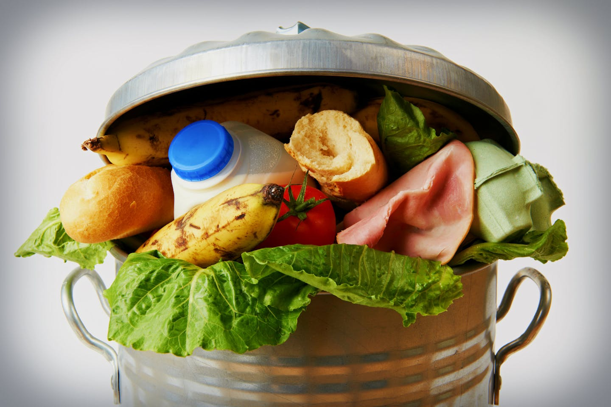

A third of the food intended for human consumption – around 1.3 billion tons – is wasted or lost. This is enough to feed 3 billion people. Food waste and loss account for approximately one-quarter of greenhouse gas emissions annually; if it was a country, food waste would be the third-largest emitter of greenhouse gases, behind China and the US. Food production accounts for around one-quarter – 26% – of global greenhouse gas emissions. Our World in Data Food production accounts for around one-quarter – 26% – of global greenhouse gas emissions. Our World in Data Food waste and loss occurs at different stages in developing and developed countries; in developing countries, 40% of food waste occurs at the post-harvest and processing levels, while in developed countries, 40% of food waste occurs at the retail and consumer levels. At the retail level, a shocking amount of food is wasted because of aesthetic reasons; in fact, in the US, more than 50% of all produce thrown away in the US is done so because it is deemed to be “too ugly” to be sold to consumers. This amounts to about 60 million tons of fruits and vegetables.
